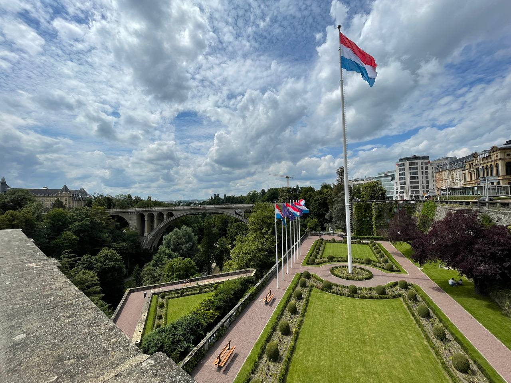
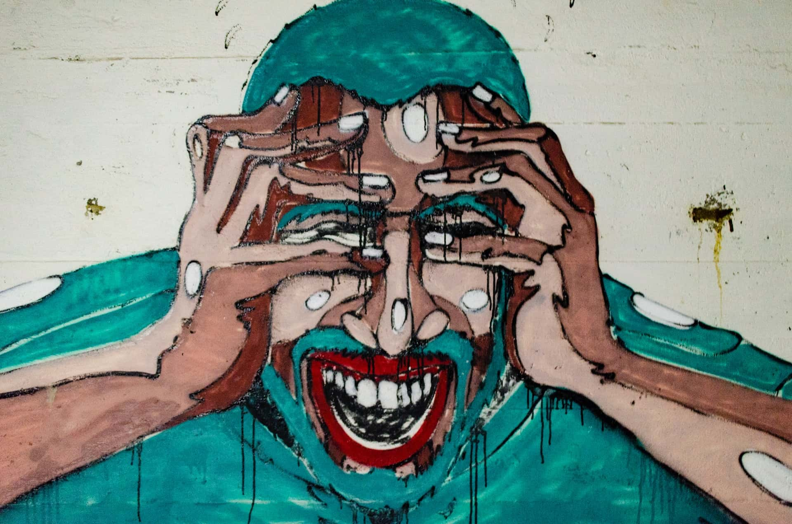

Tweets by lalabuy948


Wfh Wtf
Wfh - wtf? Working from home is post fake-pandemic trend which seems to make life of corpos even harder than paying higher taxes than others and feeding others because they became bigger and more successful than others, this is normal behavior of our undeveloped society and non-discipline minds. But what happened with small to medium bizes founded by entrepreneurs, who are real people and humans? This camp was divided into two extremes.
How to Start Enjoying Airplanes
I used to flight quite a lot in the past, due to last year it stopped for a while, but now I’m back in-game. A lot of my colleagues and acquaintances complaining about business trips and how it’s hard to flight every second week. To be honest I disagree with the statement that flights are exhausting. I would like to share my way of doing it and what I take with me on every business trip to flight with pleasure.
How I Became Digital Nomad CTO

Or how I moved with one backpack and half suitcase. Foreword This story has begun on 08.06 of 2021. The CEO of our company invited me to his office. We discussed my half year review and etc, and he put an offer in front of me. I went through, and I have to admit it was a nice package. But here is a small thing, I had to move to Luxembourg.
BasicBB
Basic Building Blocks My blog and GitHub slightly empty in the past few months. I started spending less time on coding itself. I guess this happened to me naturally. I was a software engineer for the past five years and I was building amazing things in good teams and companies. I started to feel that I would like to help other people more than being focus on personal success.
That’s why I started spending much more of my spare time on our family project which is called basicbb - Basic Building Blocks.
Don’t go to IT or even go out

During massive panic around the world I got stuck at home the same as a lot of other people probably. And a lot of my friends watching on me because not much changed in my life, I didn’t lose my job and I busy every day even due to massive panic which causes lockdown. So, they started asking me what should I do to become a developer like you and do millions per month?